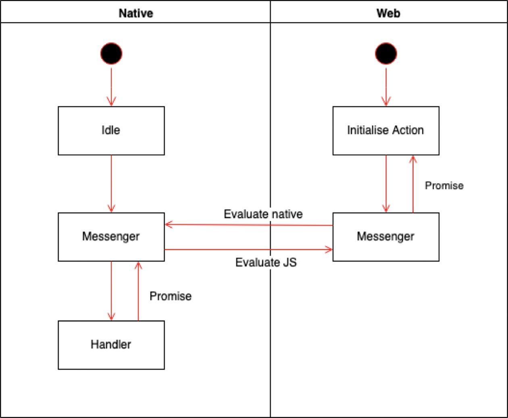
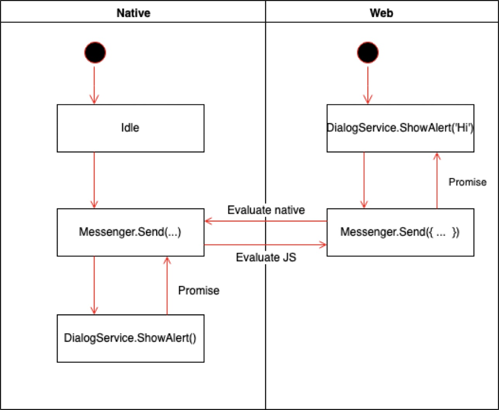

Mobile App Entwicklung
Lektion 5
Hybrid-Apps
Rückblick
- Einführung Android
- Benachrichtigungen
Übersicht Lektionen
- Vorstellung, Einführung und Aufsetzen von Werkzeugen
- MVVM, Bindings, Controls, Debugging
- Dialogs, Styling, IOC, Testing
- Benachrichtigungen (Lokal/Push/Remote)
- Hybrid-Apps
- Datenbanken (SQLite); HTTP Client
- Security & Biometrie
- LK1; Projektarbeit
- MLZ Präsentationen; Themen nach Wahl
Ablauf der Lektion
- Übersicht: Hybrid Applikationen
- Interoperabilität mit dem nativen Teil
- Schnittstelle zwischen Web und nativem Code entwerfen
- Kleines Beispiel implementieren
- Ansatz präsentieren
Vorteile
- Hybrid-Ansatz ist etwa 50% des Markts (obwohl dies schwer zu beweisen ist)
- Auch Mobile Web Browsers unterstützen die modernste HTML/CSS/JS APIs
- Erlaubt Plattformunabhängiges Entwickeln für iOS, Android, und Desktop-Web gleichzeitig
- Es ist leichter Web- als iOS/Android Entwickler zu finden
- Aktualisieren der App kann ohne Store-Update statt finden
Nachteile
- Wirkt nicht immer so fliesend wie natives Code (obwohl das wird mit neueren Releases immer besser)
- Man muss trotzdem beide API-Welten verstehen (Native & Web)
- Bei natives Code nicht so tiefgehend
- Hingegen bei Web-Entwicklung schon
Umsetzung
- Natives Teil deklariert ein JavaScript-API
- Web Browser kann den nativen Teil "antworten"
- Web kann mit Nativen Komponenten kombiniert werden (z.B. für Sicherheitsrelevanten Eingaben wie PINs)
WebView Komponenten
WebView Details
- Die Kontrolle ist ein Umhüllung um ein eigenes Prozess
- Man kann auch mehrere WebViews einsetzen
- HTML-Seiten können entweder aus App-Ressourcen oder von Remote-URLs geladen werden
- CORS muss wie immer berücksichtigt werden
Hybrid Architecture

Hybrid-Beispiel
- Beispiel-Implementation in
APE2021_App - Branch:
feature/day5_hybrid_apps - Verzeichnis:
/Hybrid - Umsetzung: Xamarin mit nur Android
JS-Schnittstelle deklarieren
public class JavaScriptInject : Object {
///
/// Annotate methods with the
[JavascriptInterface]
[Export("doSomething")]
public void FromJavaScript() { /* ... */ }
///
/// Annotated methods can also accept parameters.
///
[JavascriptInterface]
[Export("doSomething")]
public void FromJavaScript(string message) { /* ... */ }
}
JS-Schnittstelle registrieren
// Set the content layout which contains a simple web view.
SetContentView(Resource.Layout.activity_main);
// Extract the web view from the layout.
var webView = (WebView)FindViewById(Resource.Id.webView);
// Configure WebView to allow JS and inject our custom interface.
webView.Settings.JavaScriptEnabled = true;
webView.AddJavascriptInterface(new JavaScriptInject(this), "Native");
// Load a local HTML file.
webView.LoadUrl("file:///android_asset/index.html");
WebView -> Native
Mit Native.doSomething() ausführen
<input type="button" onclick="Native.doSomething()" value="Invoke native" />
...oder mit Parametern ausführen
<input type="button" onclick="Native.doSomething('Another message...')" value="Invoke native with param" />
Native -> WebView
webView.EvaluateJavascript("do some JS magic...", null);
public class Callback : Java.Lang.Object, IValueCallback
{
public void OnReceiveValue(Object value) {
// Do something with the value...
}
}
webView.EvaluateJavascript("do some JS magic...", new Callback());
Debugging the Webview
WebView.SetWebContentsDebuggingEnabled(true);aufrufen- In Chrome,
chrome://inspect/#devicesin einem Tab öffnen - Gerät suchen und "inspect" klicken
- Ein zweites Fenster mit dem Inspector vom Gerät wird geöffnet
Hybrid-App
- Native -> Web
- Web -> Native

Fragen?

Übungen
- Generische Schnittstelle für die Kommunikation zwischen Native <-> Web entwerfen
- In Gruppen oder individuell
- Design präsentieren

Eine Lösung: Mediator
- "Messages" senden und verteilen
- Die Web-App "treibt" das Native Teil
- Native wird als “API” benutzt
- Pattern ist als “Messenger” in WPF bekannt
Mediator Architektur
Mediator für Dialog
Mediator: Web Code
Das Absenden einer Nachricht ergibt ein Promise, welches ein Booleschen Wert zurückgibt.
return
this.messenger
.send(new SetBiometricValueMessage(entry, btoa(value)))
.then((response: OperationResponse) => response.success);
Mediator: Java Code
"Handlers" werden registriert, um bestimmten Typen von Nachrichten zu implementieren.
messageRegistrar.registerHandler(
SetBiometricValueMessage.TAG,
SetBiometricValueMessage.class,
new MessageHandler<EmptyResponse, SetBiometricValueMessage>() {
@Override
public MapPromise<EmptyResponse> invoke(SetBiometricValueMessage setBiometricValueMessage) {
return biometricStorage.setValue(
setBiometricValueMessage.key,
encodingUtils.fromBase64(setBiometricValueMessage.value)
);
}
}
);
Fragen?
Übungen
- Eigenes Projekt ausbauen